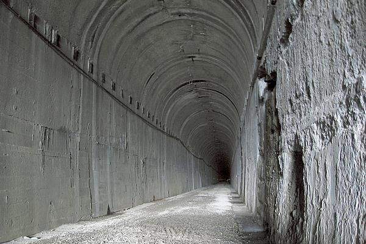
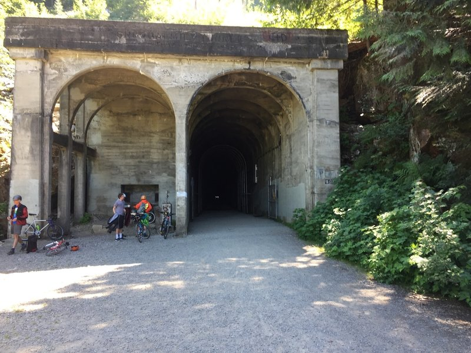
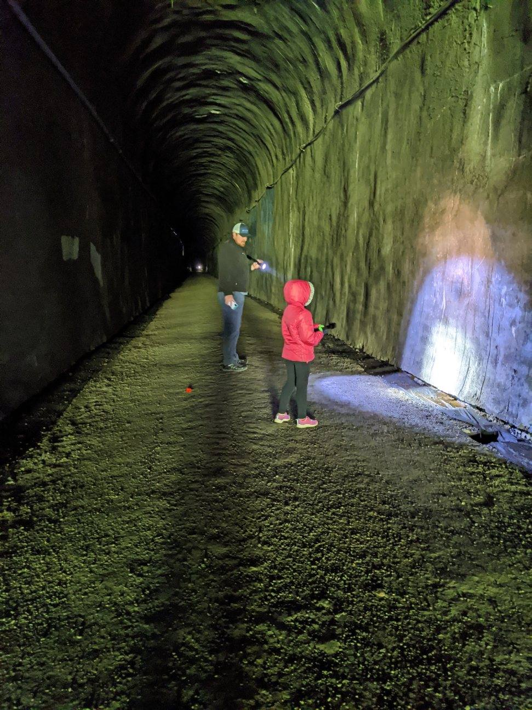

A Journey Through Nature's Splendor
This is a brief introduction to the Snoqualmie Tunnel hike...
This hike is less of a hike and more of an expierence. We strongly reccomend bringing a light or head lamp because it is pitch dark. Its approximately 3 miles long, and is said to be haunted. It is great for riding your bike through or just strolling through. It does get a little chilly in the tunnel so bring a jacket!


